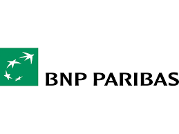
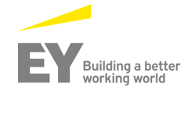
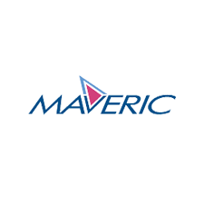

IT professional with 12+ years of experience in BFSI and capital markets domains, specializing in wealth management platforms and regulatory-driven financial systems.
My expertise includes functional and business analysis, UAT coordination, requirement gathering, and stakeholder management across front-office, middle-office, and back-office processes.
I have worked extensively on investment products such as equities, mutual funds, ETFs, and advisory platforms, ensuring system compliance with regulatory norms, operational accuracy, and seamless user experience.
I collaborate closely with business users, developers, and QA teams to translate complex financial requirements into scalable technology solutions.
Requirement elicitation, BRD/FSD documentation, functional specifications, stakeholder alignment, impact analysis, and solution validation.
UAT planning and coordination, test strategy, execution tracking, defect triage, stakeholder sign-off, and release readiness.
User stories, acceptance criteria, backlog refinement, sprint support, requirement traceability, and collaboration with development and QA teams.
Production incident analysis, root cause investigation, defect prioritisation, hotfix coordination, and resolution validation.
IT and project audit support, control reviews, audit documentation, risk tracking, test metrics, delivery reporting, and quality governance.
Jira-based backlog and defect tracking, Confluence documentation, requirements traceability, project dashboards, and functional knowledge management.
Wealth management, portfolio management, investment planning, and front-, middle-, and back-office business workflows.
End-to-end bank guarantee lifecycle, functional process analysis, compliance, commission workflows, SWIFT-related processes, and BPM-to-TIBCO migration.

2025 – Present - Senior Business Analyst
Driving functional business analysis for digital trade finance and bank guarantee workflows. Supporting requirements elicitation, process analysis, impact assessment, BPM-to-TIBCO migration, UAT, and defect resolution while collaborating with business stakeholders and technology teams in an Agile delivery environment.

2021 – 2025 - Associate Functional Manager
Coordinated test management and delivery governance while contributing to IT audits and project audits. Supported control reviews, audit documentation, risk identification, and compliance tracking, alongside test planning, execution monitoring, defect prioritisation, and quality reporting.
2018 – 2021 - Senior Associate (Functional)
Analysed functional requirements and translated business needs into testable scenarios for banking applications. Collaborated with business and technology teams on workflow validation, functional testing, defect analysis, requirement traceability, and quality assurance to support reliable solution delivery.

2014 – 2018 - Senior Test Engineer (Functional)
Executed functional, integration, regression, and end-to-end testing for wealth management and financial services applications. Analysed business requirements, prepared test scenarios, managed defects, and validated investment-related workflows to ensure functional accuracy and release quality.